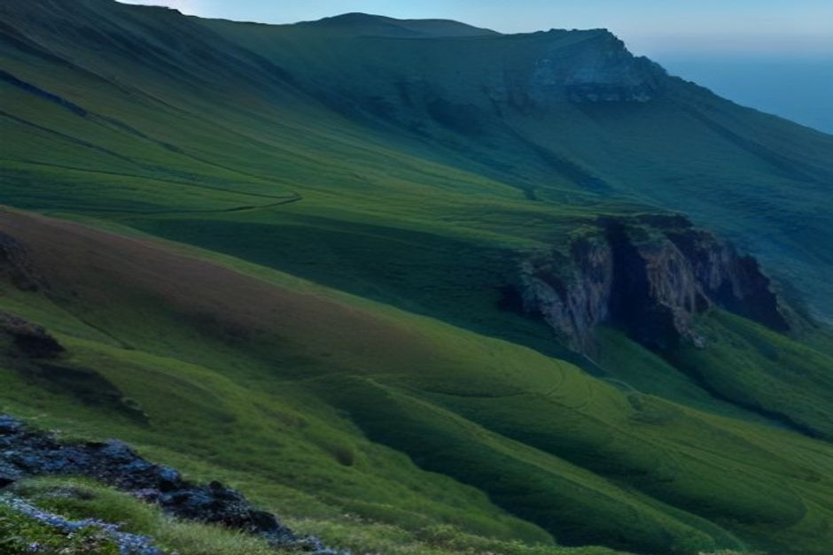
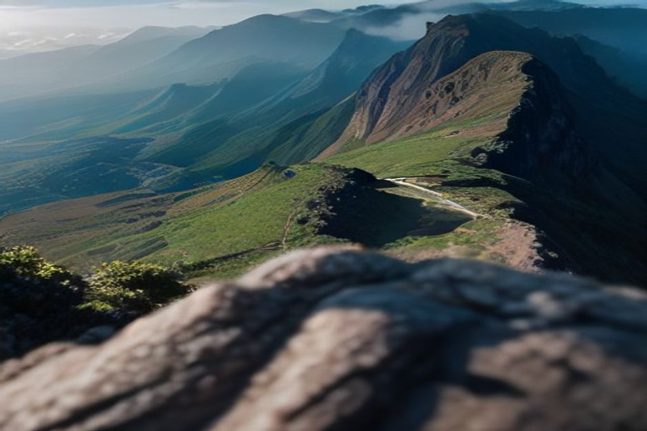

Most visitors who hike in Madeira's mountains head for Pico do Arieiro and never realise it isn't actually the highest point on the island. That title belongs to Pico Ruivo, a peak you can only reach on foot — and, depending on the route, that's either an easy stroll or one of the most demanding ridge walks in Portugal.
How tall is Pico Ruivo, and is it really Madeira's highest peak?
Yes — at 1,862 metres, Pico Ruivo is the highest point on the island, just ahead of Pico das Torres at 1,851m and well above Pico do Arieiro at 1,818m, the peak most visitors assume is the tallest because it's the one with road access and a car park. Pico Ruivo has no road at all. Every route to the summit is on foot, which is part of why it feels wilder and quieter than its more famous, more photographed neighbour.

What's the easiest way up — the route from Achada do Teixeira?
The PR1.2 trail, Vereda do Pico Ruivo, is the short and accessible option. It starts at Achada do Teixeira, a parking area reachable by car near a basalt rock formation locally known as "Homem em Pé" (Standing Man), and covers 2.8 kilometres one-way to the summit — 5.6km round trip — on a well-paved path with a steady but manageable climb of around 1.5 hours each way. It's rated moderate rather than hard, and it's the route most first-time visitors and families use to stand on Madeira's true high point without a full day of ridge walking.
What's the PR1 ridge trail from Pico do Arieiro like?
It's a different hike altogether. The PR1, Vereda do Areeiro, links Pico do Arieiro to Pico Ruivo along roughly 6 kilometres of exposed volcanic ridge, taking about three hours one-way. The trail cuts through five unlit tunnels bored into volcanic tuff — bring a headlamp — alongside steep drops on both sides and sections of stairs and railings bolted into the rock. It's frequently ranked among the most spectacular ridge walks in Europe, and also one of the more serious ones on the island: not technical climbing, but not a casual walk either.
Do you need to book Pico Ruivo in 2026?
Yes, on both routes. Since reopening in spring 2026 after a wildfire closure, access to the PR1 and PR1.2 trails runs through the SIMplifica online booking system, with a timed slot and a small access fee — around €4.50, or roughly €3 if you're booked through a registered protocol operator. Madeira residents and children under 12 are exempt from the fee but still need to register the slot. Rangers check a QR code at the trailhead, so it's worth booking a day or two ahead rather than turning up and hoping for space.
Is there anywhere to eat or sleep on the mountain?
There's a basic shelter, not a restaurant. The Casa de Abrigo do Pico Ruivo sits just below the summit and functions as a mountain refuge rather than a café — useful in bad weather, but not somewhere to plan on buying food or water. A second shelter house stands at the Achada do Teixeira trailhead. Bring everything you need with you; there's no service of any kind once you're on the trail.
When is the best time to hike, and what should you pack?
Early morning, for the same reason Pico do Arieiro is famous for sunrise: cloud tends to build through the day, and the "sea of clouds" effect below the peaks is at its clearest before mid-morning. Temperatures at 1,862 metres run 10-15°C colder than Funchal at sea level, with wind that picks up fast and with little warning, so layers matter even on a warm coastal day. If you're taking the PR1 ridge, add a headlamp for the tunnels and sturdy footwear for the exposed sections — the PR1.2 from Achada do Teixeira is forgiving enough for trainers and a light jacket.
How does a mountain summit compare to a boat trip at sea level?
They're the same island seen from opposite ends of its elevation. Pico Ruivo shows you Madeira's volcanic spine and, on a clear morning, a sea of cloud below your feet; a private boat trip with Chifbay along the south coast shows the same island from the water, with Cabo Girão's 580-metre cliff rising straight out of the Atlantic and swim stops most hikers never see. Neither view replaces the other — pairing an early mountain hike with an afternoon on the water is a genuinely good way to use one Madeira day.
Whichever route you take, Pico Ruivo rewards the extra planning: book the slot, dress for altitude, and you'll stand on the actual highest point of an island most visitors only see from its third-highest one.
Frequently asked questions
How tall is Pico Ruivo?
1,862 metres — Madeira's highest point, ahead of Pico das Torres (1,851m) and Pico do Arieiro (1,818m).
Do I need to book Pico Ruivo in advance?
Yes, through SIMplifica, with a small fee (around €4.50) — residents and under-12s are fee-exempt but still need a slot.
Is Pico Ruivo harder than Pico do Arieiro?
The short PR1.2 from Achada do Teixeira is easier; the PR1 ridge trail from Arieiro is considerably harder, with tunnels and exposed drops.

Can beginners hike Pico Ruivo?
Yes, via the PR1.2 from Achada do Teixeira — a paved 2.8km path each way, manageable for most fit walkers.
What should I bring?
Warm layers, sturdy shoes, water, your SIMplifica confirmation, and a headlamp if taking the PR1 ridge and its unlit tunnels.